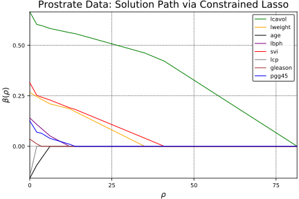

Example
Unconstrained lasso
This demonstration solves a regular, unconstrained lasso problem using the constrained lasso solution path (lsq_classopath.jl) and compares to two other methods.
## load data
prostate = readtable("data/prostate.csv")
## organize data
# combine predictors into data matrix
X= prostate[:, [:lcavol, :lweight, :age, :lbph, :svi, :lcp, :gleason, :pgg45]]
# demean predictors
Xz = Array{Float64}(X)
for i in 1:size(Xz,2)
Xz[:, i] -= mean(Xz[:, i])
Xz[:, i] /= std(Xz[:, i])
end
# define response
y = Vector(prostate[:lpsa])
# extract dimensions
n, p = size(Xz)
## solve using lasso solution path algorithm
βpath, ρpath, = lsq_classopath(Xz, y);
@show βpath
@show ρpathProblem
Name :
Objective sense : min
Type : LO (linear optimization problem)
Constraints : 17
Cones : 0
Scalar variables : 17
Matrix variables : 0
Integer variables : 0
Optimizer started.
Interior-point optimizer started.
Presolve started.
Linear dependency checker started.
Linear dependency checker terminated.
Eliminator started.
Freed constraints in eliminator : 16
Eliminator terminated.
Eliminator - tries : 1 time : 0.00
Lin. dep. - tries : 1 time : 0.00
Lin. dep. - number : 0
Presolve terminated. Time: 0.00
Interior-point optimizer terminated. Time: 0.00.
Optimizer terminated. Time: 0.00
Interior-point solution summary
Problem status : PRIMAL_AND_DUAL_FEASIBLE
Solution status : OPTIMAL
Primal. obj: 0.0000000000e+00 nrm: 0e+00 Viol. con: 0e+00 var: 0e+00
Dual. obj: 0.0000000000e+00 nrm: 1e+00 Viol. con: 0e+00 var: 0e+00
Basic solution summary
Problem status : PRIMAL_AND_DUAL_FEASIBLE
Solution status : OPTIMAL
Primal. obj: 0.0000000000e+00 nrm: 0e+00 Viol. con: 0e+00 var: 0e+00
Dual. obj: 0.0000000000e+00 nrm: 1e+00 Viol. con: 0e+00 var: 0e+00
Problem
Name :
Objective sense : min
Type : CONIC (conic optimization problem)
Constraints : 119
Cones : 2
Scalar variables : 120
Matrix variables : 0
Integer variables : 0
Optimizer started.
Conic interior-point optimizer started.
Presolve started.
Linear dependency checker started.
Linear dependency checker terminated.
Eliminator - tries : 0 time : 0.00
Lin. dep. - tries : 1 time : 0.00
Lin. dep. - number : 0
Presolve terminated. Time: 0.00
Optimizer - threads : 4
Optimizer - solved problem : the dual
Optimizer - Constraints : 18
Optimizer - Cones : 2
Optimizer - Scalar variables : 117 conic : 101
Optimizer - Semi-definite variables: 0 scalarized : 0
Factor - setup time : 0.00 dense det. time : 0.00
Factor - ML order time : 0.00 GP order time : 0.00
Factor - nonzeros before factor : 63 after factor : 63
Factor - dense dim. : 0 flops : 7.51e+03
ITE PFEAS DFEAS GFEAS PRSTATUS POBJ DOBJ MU TIME
0 1.0e+00 1.0e+01 1.1e+00 0.00e+00 0.000000000e+00 -8.000000000e+00 1.0e+00 0.00
1 2.9e-01 3.0e+00 2.5e-01 -6.12e-01 2.431563090e+02 3.064441612e+02 2.9e-01 0.00
2 1.2e-01 1.2e+00 9.9e-02 -2.58e-01 7.570738803e+02 8.467085693e+02 1.2e-01 0.00
3 5.6e-02 5.7e-01 4.5e-02 -7.42e-02 1.116869289e+03 1.215125679e+03 5.6e-02 0.00
4 1.5e-02 1.5e-01 2.0e-02 3.27e-01 3.582525539e+02 3.943708800e+02 1.5e-02 0.00
5 6.0e-03 6.1e-02 9.0e-03 4.79e-01 5.718049703e+02 6.037525189e+02 6.0e-03 0.00
6 2.0e-03 2.0e-02 5.4e-03 9.57e-01 4.287495927e+02 4.381887614e+02 2.0e-03 0.00
7 1.0e-03 1.0e-02 3.7e-03 1.01e+00 3.928777941e+02 3.978818047e+02 1.0e-03 0.00
8 3.6e-04 3.7e-03 2.2e-03 1.01e+00 3.763832282e+02 3.782630784e+02 3.6e-04 0.00
9 9.9e-05 1.0e-03 1.1e-03 9.78e-01 3.650252476e+02 3.656031327e+02 9.9e-05 0.00
10 1.8e-05 1.8e-04 4.6e-04 9.96e-01 3.626229618e+02 3.627306503e+02 1.8e-05 0.00
11 2.6e-06 2.6e-05 1.7e-04 9.95e-01 3.619775109e+02 3.619931489e+02 2.6e-06 0.00
12 4.5e-07 4.5e-06 7.2e-05 9.97e-01 3.618833886e+02 3.618861474e+02 4.5e-07 0.00
13 8.9e-08 9.0e-07 3.2e-05 9.99e-01 3.618690365e+02 3.618695932e+02 8.9e-08 0.00
14 2.0e-08 2.1e-07 1.5e-05 1.00e+00 3.618661510e+02 3.618662800e+02 2.0e-08 0.00
15 5.9e-09 6.0e-08 8.2e-06 1.00e+00 3.618655610e+02 3.618655987e+02 5.9e-09 0.00
16 1.9e-09 1.9e-08 4.6e-06 1.00e+00 3.618653767e+02 3.618653887e+02 1.9e-09 0.00
17 5.6e-10 5.7e-09 2.5e-06 1.00e+00 3.618653285e+02 3.618653321e+02 5.6e-10 0.00
Interior-point optimizer terminated. Time: 0.00.
Optimizer terminated. Time: 0.00
Interior-point solution summary
Problem status : PRIMAL_AND_DUAL_FEASIBLE
Solution status : OPTIMAL
Primal. obj: 3.6186532850e+02 nrm: 7e+02 Viol. con: 0e+00 var: 0e+00 cones: 1e-07
Dual. obj: 3.6186533211e+02 nrm: 2e+02 Viol. con: 0e+00 var: 5e-07 cones: 0e+00
Problem
Name :
Objective sense : min
Type : CONIC (conic optimization problem)
Constraints : 119
Cones : 2
Scalar variables : 120
Matrix variables : 0
Integer variables : 0
Optimizer started.
Conic interior-point optimizer started.
Presolve started.
Linear dependency checker started.
Linear dependency checker terminated.
Eliminator - tries : 0 time : 0.00
Lin. dep. - tries : 1 time : 0.00
Lin. dep. - number : 0
Presolve terminated. Time: 0.00
Optimizer - threads : 4
Optimizer - solved problem : the dual
Optimizer - Constraints : 18
Optimizer - Cones : 2
Optimizer - Scalar variables : 117 conic : 101
Optimizer - Semi-definite variables: 0 scalarized : 0
Factor - setup time : 0.00 dense det. time : 0.00
Factor - ML order time : 0.00 GP order time : 0.00
Factor - nonzeros before factor : 63 after factor : 63
Factor - dense dim. : 0 flops : 7.51e+03
ITE PFEAS DFEAS GFEAS PRSTATUS POBJ DOBJ MU TIME
0 1.0e+00 1.0e+01 1.1e+00 0.00e+00 0.000000000e+00 -8.000000000e+00 1.0e+00 0.00
1 2.9e-01 3.0e+00 2.5e-01 -6.12e-01 2.431563090e+02 3.064441612e+02 2.9e-01 0.00
2 1.2e-01 1.2e+00 9.9e-02 -2.58e-01 7.570738803e+02 8.467085693e+02 1.2e-01 0.00
3 5.6e-02 5.7e-01 4.5e-02 -7.42e-02 1.116869289e+03 1.215125679e+03 5.6e-02 0.00
4 1.5e-02 1.5e-01 2.0e-02 3.27e-01 3.582525539e+02 3.943708800e+02 1.5e-02 0.00
5 6.0e-03 6.1e-02 9.0e-03 4.79e-01 5.718049703e+02 6.037525189e+02 6.0e-03 0.00
6 2.0e-03 2.0e-02 5.4e-03 9.57e-01 4.287495927e+02 4.381887614e+02 2.0e-03 0.00
7 1.0e-03 1.0e-02 3.7e-03 1.01e+00 3.928777941e+02 3.978818047e+02 1.0e-03 0.00
8 3.6e-04 3.7e-03 2.2e-03 1.01e+00 3.763832282e+02 3.782630784e+02 3.6e-04 0.00
9 9.9e-05 1.0e-03 1.1e-03 9.78e-01 3.650252476e+02 3.656031327e+02 9.9e-05 0.00
10 1.8e-05 1.8e-04 4.6e-04 9.96e-01 3.626229618e+02 3.627306503e+02 1.8e-05 0.00
11 2.6e-06 2.6e-05 1.7e-04 9.95e-01 3.619775109e+02 3.619931489e+02 2.6e-06 0.00
12 4.5e-07 4.5e-06 7.2e-05 9.97e-01 3.618833886e+02 3.618861474e+02 4.5e-07 0.00
13 8.9e-08 9.0e-07 3.2e-05 9.99e-01 3.618690365e+02 3.618695932e+02 8.9e-08 0.00
14 2.0e-08 2.1e-07 1.5e-05 1.00e+00 3.618661510e+02 3.618662800e+02 2.0e-08 0.00
15 5.9e-09 6.0e-08 8.2e-06 1.00e+00 3.618655610e+02 3.618655987e+02 5.9e-09 0.00
16 1.9e-09 1.9e-08 4.6e-06 1.00e+00 3.618653767e+02 3.618653887e+02 1.9e-09 0.00
17 5.6e-10 5.7e-09 2.5e-06 1.00e+00 3.618653285e+02 3.618653321e+02 5.6e-10 0.00
Interior-point optimizer terminated. Time: 0.00.
Optimizer terminated. Time: 0.00
Interior-point solution summary
Problem status : PRIMAL_AND_DUAL_FEASIBLE
Solution status : OPTIMAL
Primal. obj: 3.6186532850e+02 nrm: 7e+02 Viol. con: 0e+00 var: 0e+00 cones: 1e-07
Dual. obj: 3.6186533211e+02 nrm: 2e+02 Viol. con: 0e+00 var: 5e-07 cones: 0e+00
βpath = [0.000288547 0.421757 0.462067 0.557961 0.562926 0.583288 0.597819 0.603394 0.665753; 0.0 0.0 0.0 0.171857 0.185964 0.20999 0.232729 0.246143 0.266375; 0.0 0.0 0.0 0.0 0.0 0.0 -0.0602566 -0.0936571 -0.158252; 0.0 0.0 0.0 0.0 0.0 0.0511622 0.0883199 0.108096 0.140353; 0.0 0.0 0.0403098 0.182838 0.191088 0.229042 0.243504 0.252468 0.315242; 0.0 0.0 0.0 0.0 0.0 0.0 0.0 0.0 -0.14861; 0.0 0.0 0.0 0.0 0.0 0.0 0.0 0.0121378 0.0354262; 0.0 0.0 0.0 0.0 0.0104617 0.0389939 0.064636 0.0699797 0.125818]
ρpath = [81.3897, 40.9287, 34.9738, 13.7669, 12.0481, 6.16084, 3.54187, 2.12498, 0.0]## plot solution path
using Plots; using LaTeXStrings; pyplot(); # hide
labels = ["lcavol" "lweight" "age" "lbph" "svi" "lcp" "gleason" "pgg45"]
colors = [:green :orange :black :purple :red :grey :brown :blue]
plot(ρpath, βpath', xaxis = (L"$\rho$", (minimum(ρpath),
maximum(ρpath))), yaxis = (L"$\beta(\rho$)"), label=labels, color=colors)
title!("Prostrate Data: Solution Path via Constrained Lasso")